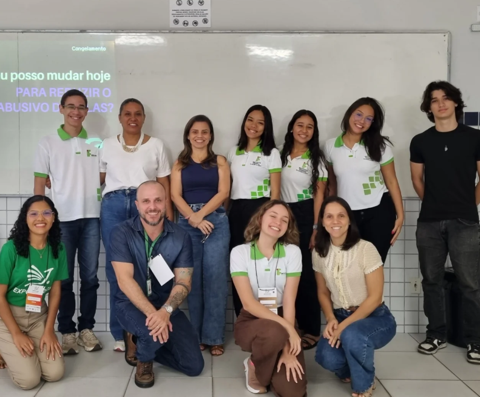
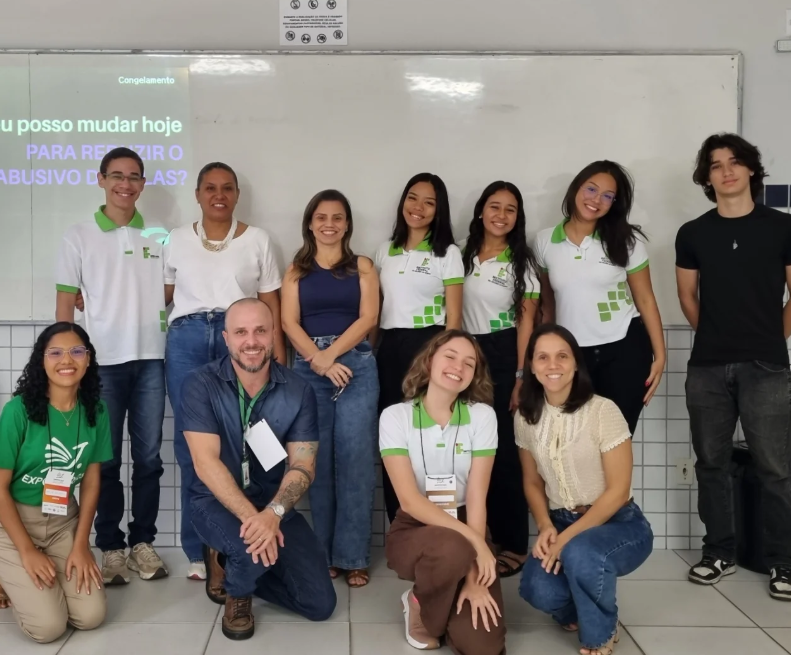

O QUE É?
A EXPOTEC É A EXPOSIÇÃO CIENTÍFICA, TECNOLÓGICA E CULTURAL DO IFRN CAMPUS CEARÁ-MIRIM, UM EVENTO QUE CELEBRA O CONHECIMENTO, A CRIATIVIDADE E A INOVAÇÃO PRODUZIDOS NO AMBIENTE ACADÊMICO E EM SEU ENTORNO. ELA SE CONFIGURA COMO UMA VERDADEIRA VITRINE VIVA DA PRODUÇÃO INTELECTUAL, DAS EXPRESSÕES ARTÍSTICAS E DAS SOLUÇÕES TECNOLÓGICAS DESENVOLVIDAS NO CAMPUS, REUNINDO ESTUDANTES, PROFESSORES, PESQUISADORES E ENTUSIASTAS EM UM ESPAÇO DE TROCA, DIÁLOGO E INSPIRAÇÃO, NO QUAL IDEIAS SÃO COMPARTILHADAS, TALENTOS SÃO VALORIZADOS E NOVAS PERSPECTIVAS PARA A CIÊNCIA, A TECNOLOGIA E A CULTURA SÃO CONSTRUÍDAS COLETIVAMENTE.
QUAL O OBJETIVO?
O PRINCIPAL OBJETIVO DA EXPOTEC É PROMOVER O INTERCÂMBIO DE SABERES , DIVULGANDO OS TRABALHOS DESENVOLVIDOS NO ÂMBITO DO ENSINO, DA PESQUISA E DA EXTENSÃO, FORTALECENDO REDES DE COLABORAÇÃO ENTRE ESTUDANTES, DOCENTES, PESQUISADORES E A COMUNIDADE. ALÉM DISSO, O EVENTO BUSCA VALORIZAR AS MÚLTIPLAS MANIFESTAÇÕES CULTURAIS DA NOSSA REGIÃO, ESTIMULANDO O DIÁLOGO ENTRE O CONHECIMENTO ACADÊMICO E OS SABERES POPULARES, APROXIMANDO O IFRN CAMPUS CEARÁ-MIRIM DA COMUNIDADE EXTERNA E REAFIRMANDO SEU COMPROMISSO SOCIAL, CULTURAL E CIENTÍFICO.

 
